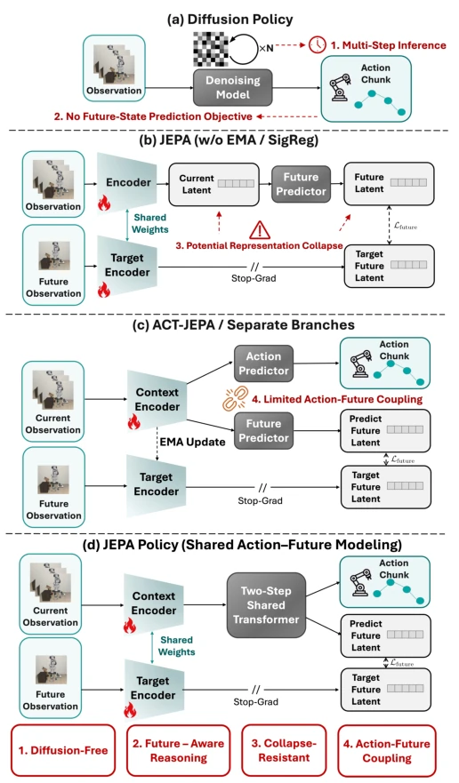
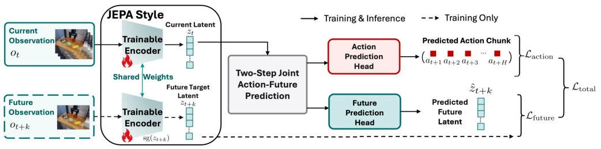
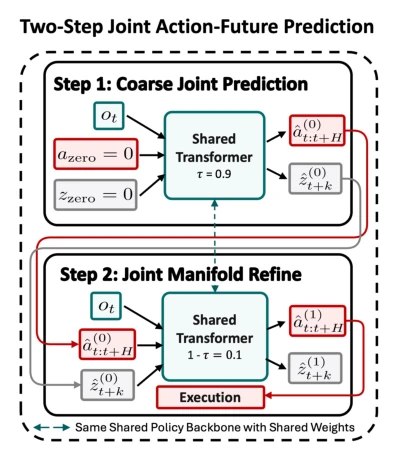
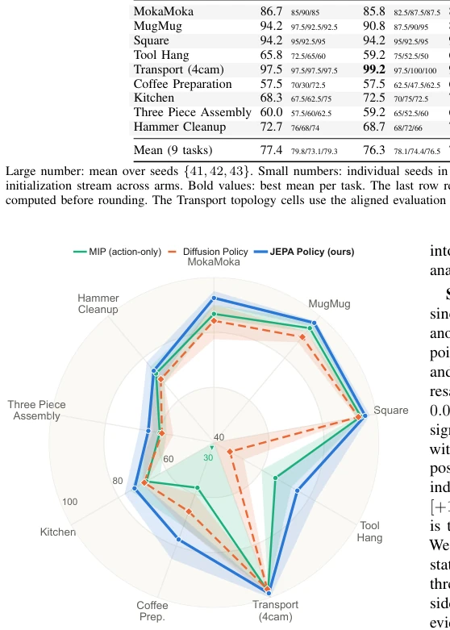
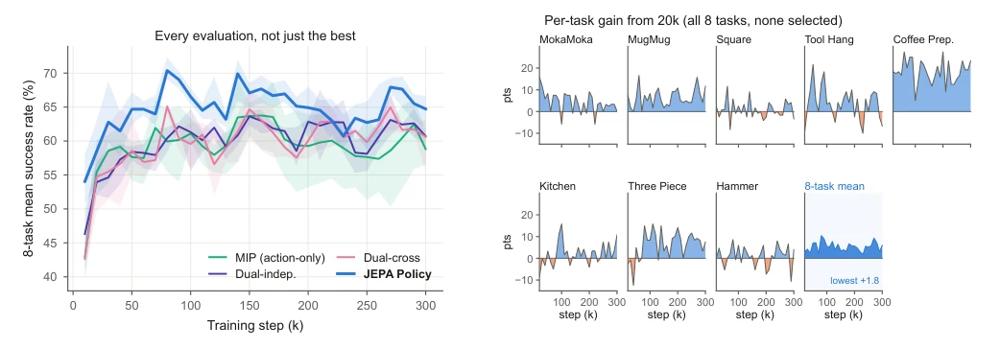
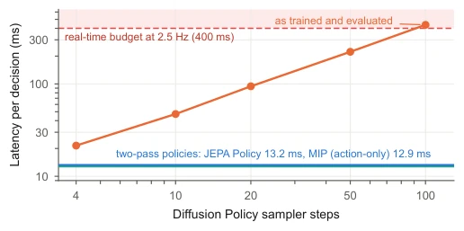
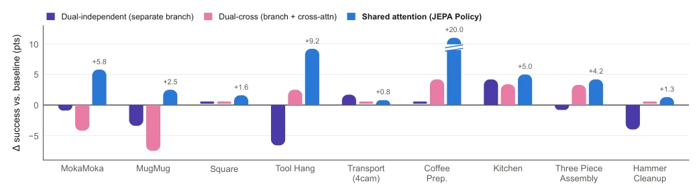
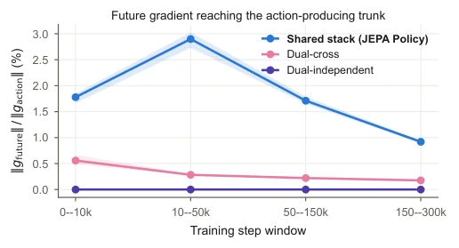
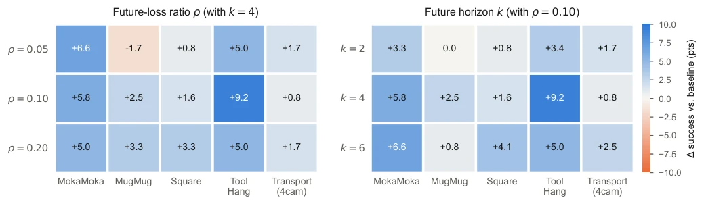
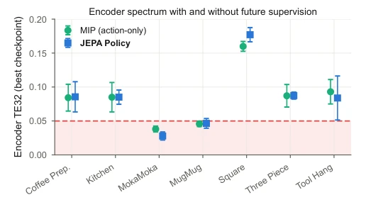

JEPA Policy attempts to add a "future prediction" buff to traditional Behavior Cloning (Behavior Cloning), and the result shows that not only did it not fail, but it also conveniently outperformed Diffusion Policy's "multi-step sampling", which has a bit of a "dimensionality reduction attack" flavor. Its biggest highlight is completely abandoning the iterative sampling of diffusion models, accomplishing the joint prediction of actions and future representations with just two forward passes; inference speed is extremely fast, with latency increasing by only 0.29ms, simply a paradigm of "wanting both and more". However, if this "future representation" is not constrained, it easily collapses into "universal nonsense"; the authors rely on action supervision to forcibly constrain it, which is effective, but feels like walking on a tightrope. Additionally, it completely relies on a visual encoder trained from scratch, not leveraging the trend of pre-trained large models, which has a bit of an "ascetic" spirit in terms of compute, but indeed proves the simple truth that "good enough is enough" in specific tasks.
Existing imitation learning paradigms, especially standard Behavior Cloning (Behavior Cloning), have a fatal flaw: it only supervises action sequences, but ignores future states after action execution. As pointed out in literature [2], this open-loop supervision leads to distribution shift and error accumulation. Although Diffusion Policy [3] improves performance by modeling multimodal action distributions, its iterative denoising process brings high inference latency. Additionally, existing JEPA variants such as ACT-JEPA [6] although introducing future representation prediction, often rely on EMA target encoders or independent branch structures, leading to insufficient interaction between actions and future representations, unable to let future goals directly shape the representations of action generation. The authors believe that expert demonstrations naturally contain "action-future state" paired information; if this paired supervision can be utilized directly, it can avoid the sampling overhead of diffusion models and prevent representation collapse through future constraints, thereby achieving more robust visual-motor imitation under low latency.

Fig. 1. Schematic comparison of design paradigms (architecture only, not a performance comparison). Red numbers mark a limitation of each prior design; the four boxes below show how JEPA Policy addresses them. Flames mark encoders trained by gradient descent. All encoders are trained from scratch because this study uses no pretrained or frozen visual backbone. “//” marks the stop-gradient.
The core of JEPA Policy is a diffusion-free framework based on a shared Transformer, adopting a two-step prediction mechanism in the style of MIP (Minimal Iterative Policy). The overall process is as follows: First, the visual encoder encodes current observations into condition vectors, while future observations generate target representations through the same encoder (with Stop-Gradient). Next, Action Tokens and Future Representation Tokens are concatenated and input into the same shared Transformer stack, where they interact directly in the self-attention mechanism of each layer. The network outputs results through two steps: the first step generates a coarse prediction from zero input, the second step uses noise-perturbed expert targets for fine-grained correction. The loss function is composed of weighted action prediction loss (Lact) and future representation prediction loss (Lfuture), where the future loss uses target-normalized MSE. Key innovations are: 1. Shared topology: Action and future tokens are in the same attention stack, allowing gradients from future prediction to directly backpropagate and update intermediate representations of action generation, forming bidirectional routing control. 2. Action-driven collapse prevention: Unlike pure self-supervised JEPA requiring EMA or regularization, here action prediction tasks are used as strong constraints to prevent future representation collapse. 3. Deployment diagnosis: The future representation output during inference can be compared with the representation of true observations after execution, generating consistency error signals for fault monitoring.

Fig. 2. Overall architecture of JEPA Policy. A shared encoder processes both observations. zt and zt+k are the outputs of its image path at the two times. The conditioning vector ct fuses zt with low-dimensional inputs (Sec. III-B); the fusion is omitted from the diagram. Action tokens qa and future-representation tokens qz enter one Transformer Tθ and interact in every self-attention layer. Separate heads produce the action sequence ˆat:t+H and future observation representation ˆzt+k. The same encoder produces the stopped target zt+k = Ergb(ot+k). Shared processing allows the future-prediction objective to update the representation used by the action head.

Fig. 3. Coarse-to-refined MIP-style training for joint action and future observation representation prediction. The first step maps a zero input (time 0) to a coarse prediction, and the second refines it (time τ). The diagram shows inference, where the second step receives the first-step output. During training, it instead receives the noised expert target from Sec. III-D. Both steps are supervised, with residuals scaled by 1
The authors evaluated on nine simulated tasks in LIBERO, Robomimic, and MimicGen, and included a physical robot experiment with 5 tasks and 630 episodes. Baselines include MIP (action-only), Diffusion Policy, and two variants (Dual-independent and Dual-cross). Results show that JEPA Policy's average success rate on all nine tasks is superior to MIP (improved by 5.6%), and surpasses Diffusion Policy on most tasks, with significant improvements especially in Coffee Preparation and Tool Hang tasks. Ablation studies show that shared attention topology (Shared Attention) is key to performance improvement, independent branches or cross-attention variants perform worse than JEPA Policy. Additionally, experiments verify that action supervision effectively prevents representation collapse and requires no additional regularization terms. In terms of inference latency, JEPA Policy increases only by 0.29ms compared to MIP, far lower than the sampling overhead of Diffusion Policy.

Fig. 4. Main comparison over nine tasks (line: three-seed mean best-checkpoint success; band: seed range; radial axis 40–100; means in Table II). A ▼and printed value mark a seed below the axis floor.

Fig. 5. Training curves for eight tasks with three completed seeds in all four arms. Left: eight-task mean across 30 evaluations (line: seed mean; band: seed range). Right: per-task JEPA Policy gain over MIP from the second evaluation onward; blue/orange denotes positive/negative gain on a shared scale. The eight-task mean is positive at all 29 evaluations (minimum +1.8); individual-task differences span −12.5 to +27.5 points.

Fig. 6. Decision latency against Diffusion Policy sampler length (Tool Hang, same accelerator, batch 1, log–log). Shortened orange chains are timing-only; shading marks latency above the 400 ms budget. JEPA Policy and MIP form one blue band (13.2 vs. 12.9 ms).

Fig. 7. Gain over MIP (three-seed mean best-checkpoint difference; per-task means in Table II). Dashes mark ties; the broken Coffee Preparation bar is +20.0; Transport topology values use the aligned window defined in Sec. IV-A. JEPA Policy averages +5.6 points across nine improvements, versus −1.1 and +0.2 for the dual variants.

Fig. 8. Norm of the future-loss gradient reaching the trunk that produces the action, relative to the action-loss gradient on the same parameters, averaged over training windows (line: mean over seeds {41, 42, 43}; band: seed range; Tool Hang). In Dual-independent the quantity is exactly zero at every logged step, by construction. The shared stack stays an order of magnitude above Dual-cross throughout, peaking in mid-training rather than decaying.

Fig. 9. Hyperparameter sensitivity as gain over the baseline (three-seed means, in points): future-loss ratio ρ (left) and future horizon k (right); blue is better than the baseline, orange worse. No configuration is materially worse than the baseline; ρ ∈[0.1, 0.2] and k ∈{4, 6} are uniformly strong choices.

Fig. 10. Encoder TE32 at the best checkpoint (marker: three-seed mean; bar: worst seed; shading: below the pre-specified 0.05 boundary). JEPA Policy tracks MIP, including the MokaMoka and MugMug boundary exceptions.